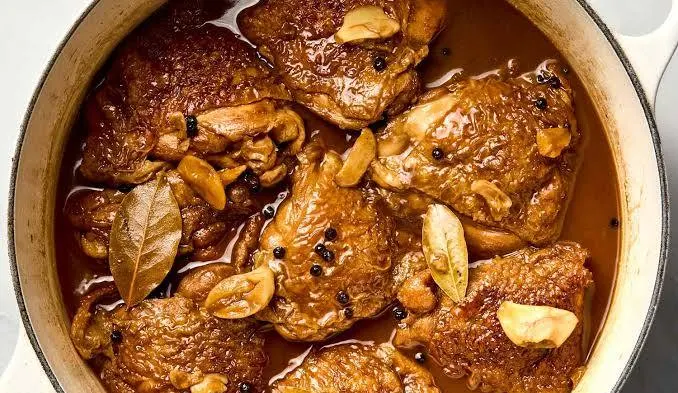

Home
Adobong Manok

Description
Filipino Adobong Manok is a classic and flavorful dish made with
tender chicken simmered in a savory blend of soy sauce, vinegar, garlic,
bay leaves, and peppercorns. Its perfect balance of salty, tangy,
and slightly sweet flavors makes it a comforting and delicious meal best
served with warm steamed rice. 🇵🇭
Ingredients
- 1 kg chicken (cut into serving pieces)
- ½ cup soy sauce
- ½ cup vinegar
- 1 cup water
- 1 whole garlic bulb (crushed)
- 1 medium onion (sliced), optional
- 3 pieces bay leaves
- 1 teaspoon whole peppercorns
- 1 tablespoon cooking oil
- 1 teaspoon sugar (optional)
- Salt to taste
Cooking Instructions
-
Marinate the chicken
Combine chicken, soy sauce, and half of the
crushed garlic. Marinate for at least 30 minutes.
-
Brown the chicken
Heat oil in a pan. Remove chicken from the marinade
and brown each side for a few minutes.
-
Add the seasonings
Add garlic, onion, bay leaves, peppercorns, soy
sauce marinade, vinegar, and water.
-
Simmer until tender
Bring to a boil without stirring for a few minutes,
then lower the heat. Cover and simmer for 30–40
minutes or until the chicken is fully cooked and tender.
-
Final seasoning and serving
Add sugar if desired. Adjust seasoning and simmer
uncovered until the sauce reaches your preferred
consistency. Serve hot with steamed rice.